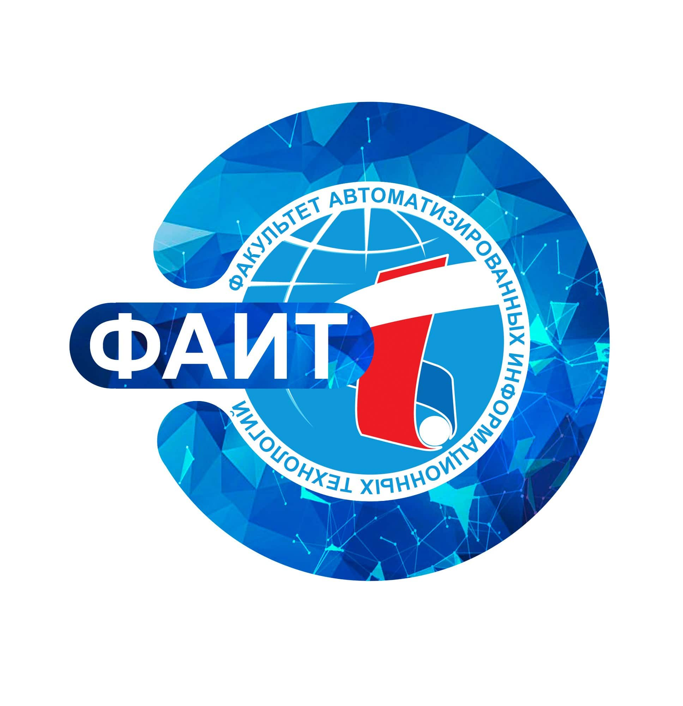

Пензенский Государственный Технологический Университет

ФАИТ (Факультет Автоматизированных Информационных Технологий)
Факультет автоматизированных информационных технологий осуществляет следующие виды деятельности:
- организация учебного процесса по профессиональным образовательным программам ВО, реализуемым на факультете;
- организация научно-методической работы в целях улучшения качества обучения, внедрения в учебный процесс активных методов и новых технологий обучения, компьютерной техники;
- организация разработки учебно-программной документации по основным профессиональным образовательным программам, реализуемым на факультете;
- организация и проведение фундаментальных и прикладных научных исследований и иных научно-технических, опытно-конструкторских работ, в том числе по проблемам образования;
- воспитание обучающихся в духе патриотизма, общечеловеческих ценностей; формирование духовной и нравственной культуры;
- формирование у обучающихся и сотрудников факультета навыков здорового образа жизни, физическое воспитание, приобщение к спортивно-массовой деятельности;
- подготовка, переподготовка и повышение квалификации специалистов, руководящих работников;
- организация работы ученого совета факультета;
- взаимодействие с потенциальными работодателями по вопросам содействия трудоустройству выпускников и студентов;
- организация профориентационной работы в учреждениях общего среднего и профессионального образования. На факультете обучается более 1000 студентов и магистрантов по образовательным программам ВО